-
- Profile. 基本信息
- 个人信息: 李孟彬 Ben / 男 / 1990
- 毕业院校: 广东科学技术职业学院计算机系
- 工作年限: 八年
- 常用ID: imrememberlee
- 博客: https://imrememberlee.github.io/
- 在线简历: https://imrememberlee.github.io/resume/yunide.html（在线简历更新比较及时）
- GitHub: www.github.com/imrememberlee
- 技术栈: webpack、react、reflux、redux、less、vue、stylus、docker
-
- Experience. 项目与工作经验
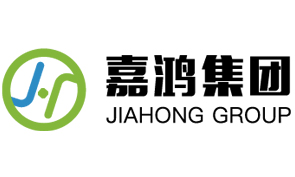深圳市嘉鸿网络科技有限公司（2020年06月 ~ 至今）
-
公司规模：2000+
主要负责深圳市嘉鸿网络科技有限公司的赛凌科技云栈商户端Saas平台前端负责人
-
云栈SaaS平台前端
主要云栈SaaS平台的产品交互、数据埋点分析、前端优化、前端需求拆解安排跟进上线
主要使用 vue、vuex、stylus elementUI、vxe—table、esLint、prettier 开发
主要货、仓、配 日活跃 商家数:162 用户数:700+,pv:2w+,总商家数:4700+
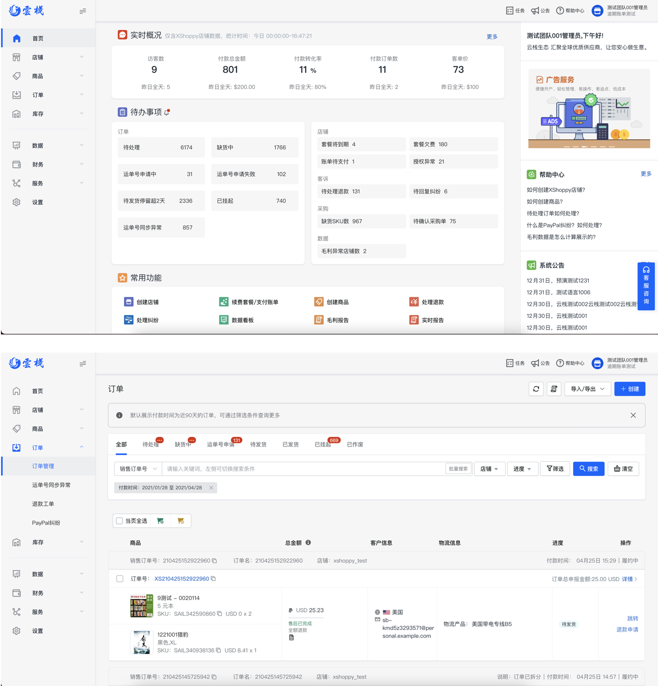 -
云栈SaaS平台前端工程化
自动化工程流: Jenkins、gitlab、verdaccio、yapi
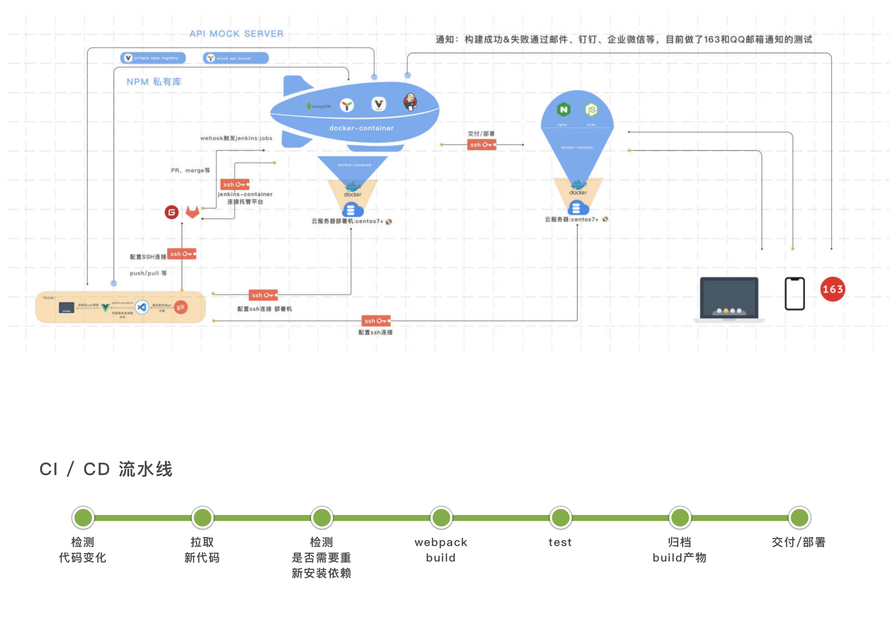 -
谷歌插件
帮助用户快捷使用
采集助手: 支持在多平台采集，采集后可刊登至多个平台多个店铺，提高商品发布效率
快邮通(Gmail): 帮跨境独立站电商中小型卖家提高工作效率，在回复客户邮件时快速与系统连接
-
- Code. 个人项目
搭建 code-serve 私有IDE
-
卖车神器
简单易用的卖车小工具
个人开发的微信小程序，现在用户数已达到18.5万
node版本问题
直接就是自己搭代理服务器，让代理来替我们处理html返回给浏览器
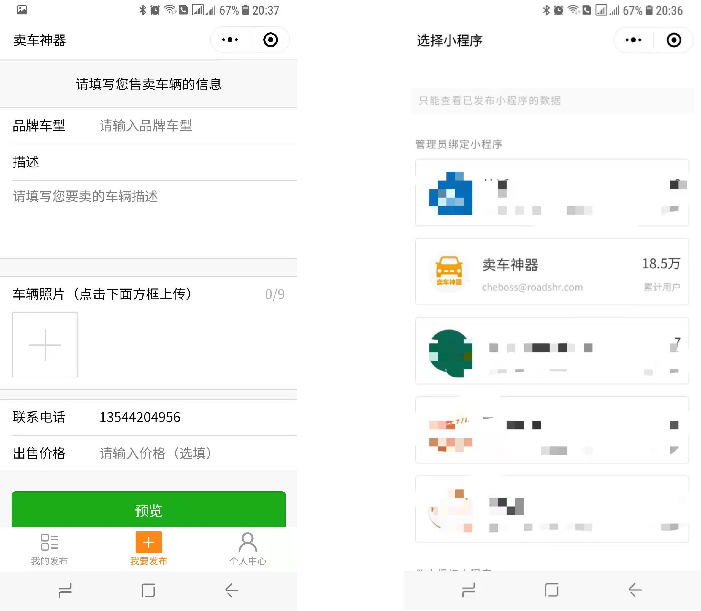
微信小程序
-
卖车神器
简单易用的卖车小工具
个人开发的微信小程序，现在用户数已达到18.5万
-
- Other. 其他
比赛
-
TCShenzhen Hackathon 深圳站冠军 报道链接 报道链接
黑客马拉松一直是TechCrunch国际创新峰会的经典活动之一，参赛团队在24小时内进行产品策划和开发，最后向公众展示作品，并由专家评审评选出优秀项目。
我们团队选择了Segway Robotics Loomo挑战任务，基于现场的资源打造一款应用于购物场景的机器人，让它辅助用户去shopping。在demo演示环节，我们充分利用了Loomo的Intel RealSense深度感知摄像头和高精度的运动追踪模组，让Loomo变身成一个智能购物篮，随时随地紧跟用户；此外通过对接数据，Loomo还支持更个性化的交互，对于用户选择一些零食还有语音提醒是否有利健康，是否满足当前饮食习惯等等功能。
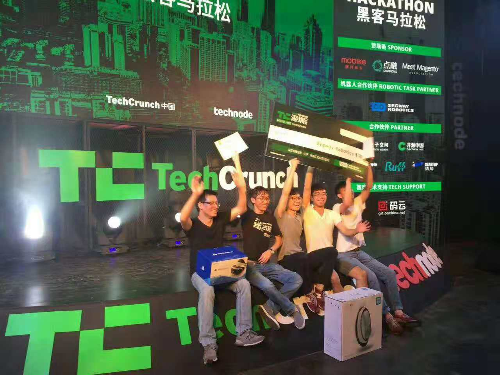
-
- Skill. 技能清单
前端
-
vue技术栈
能够编写语义化的 HTML，模块化的 CSS，完成较复杂的布局
熟悉 Less 等CSS预处理和模块化工具
-
react技术栈
熟悉原生 Javascript，能使用ES6、7进行具体开发工作
能运用模块化、面向对象的方式编程
熟悉使用 React 技术栈
后端
-
Node.js
熟悉 Node.js 的开发，使用 MongoDB 和 Redis 做数据存储和缓存，使用 pm2 和 Docker 部署
CI/CD
-
Node.js
熟悉 Node.js 的开发，使用 MongoDB 和 Redis 做数据存储和缓存，使用 pm2 和 Docker 部署
-
- Experience. 往年项目与工作经验
深圳和而泰智能控制股份有限公司（2019年06月 ~ 2020年4月）
-
公司规模：3000+ | 上市公司
主要负责深圳和而泰智能控制股份有限公司的智慧水生态综合服务平台、农业政产民项目、养老场景和校园h5小游戏的前端开发工作
主要使用 webpack4、React、Reflux、Redux、Less、ECharts、AntDesign、websock 开发
主要负责数据服务平台的大屏数据、管理页面和动态数据显示开发
按需按时交付相关项目，完成所负责模块的开发流程等文档的编写
-
智慧水生态综合服务平台
主要大屏有全国数据大屏、小区供水大屏、办公饮水大屏、门店大屏（奶茶）
使用 webpack4 打包构建，基于React、Reflux、Less、ECharts、AntDesign、websock 开发
该平台主要基于供水、滤水设备返回的数据，统计显示从水源到水龙头的各项水质及用水数据
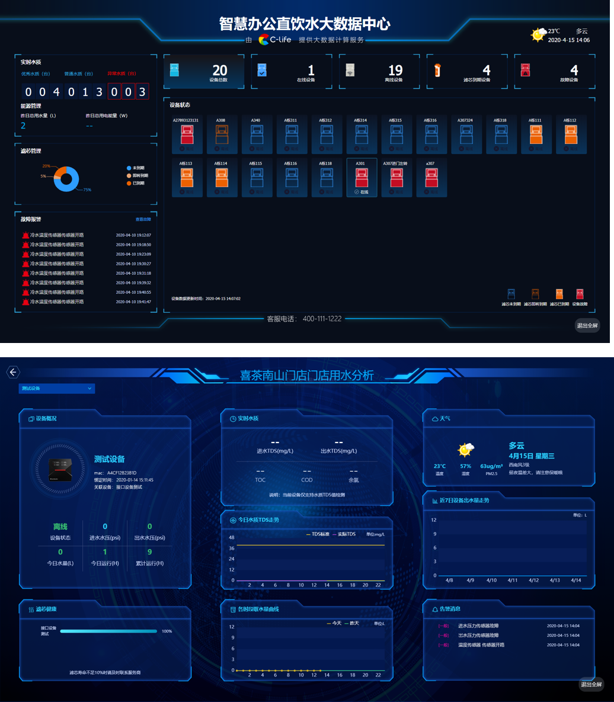 -
农业政产民项目
主要大屏有种植联网云平台、全国价格大屏、病虫害实时统计大屏
基于 AntDesign Pro 4的基础开发应用的项目，主要引入ECharts、高德地图，dva 数据交互
该平台通过农业智能设备收集土壤、农作物数据，进行分析及展示
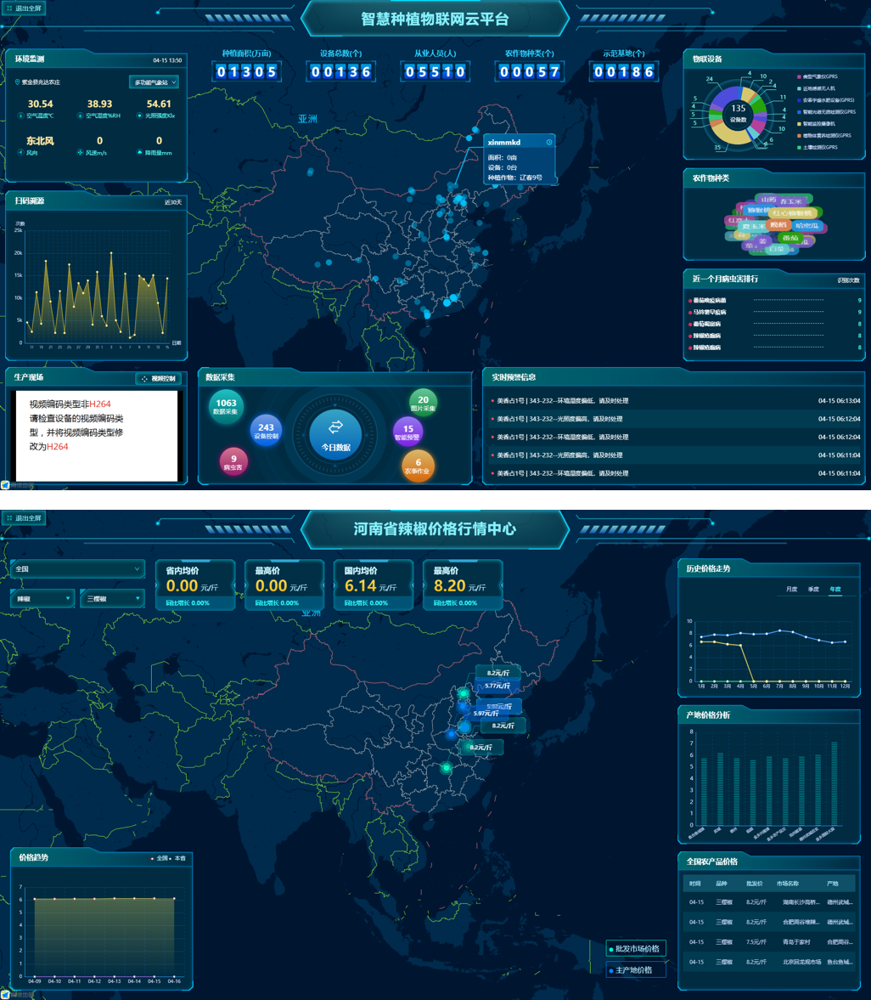 -
养老场景
主要负责老人疾病大屏数据、老人疾病数据收集页面、医护人员管理页面
使用 webpack4 打包构建，基于React、Reflux、Less、ECharts、AntDesign 开发
该平台通过移动端问卷和医疗设备收集的数据，进行数据分析及展示
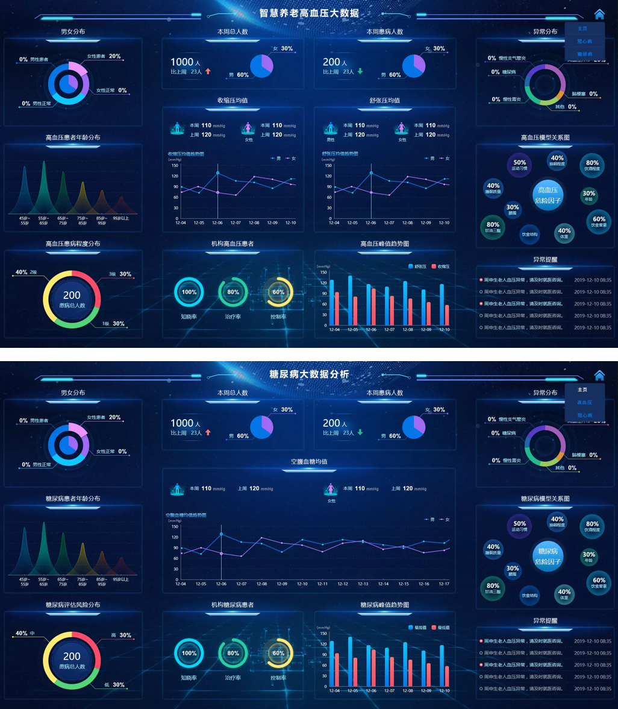 -
校园h5小游戏
主要负责移动端场景小游戏及相关后台管理平台开发
使用 webpack4 打包构建，基于React、Reflux、Less、ECharts、AntDesign 开发
该项目主要通过移动端小游戏收集的问题数据，进行数据分析及展示
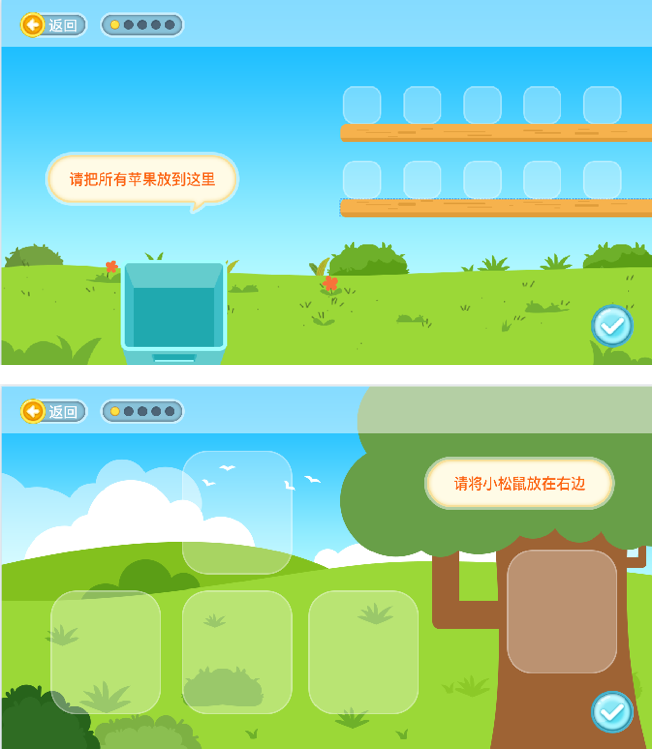
深圳无境创新科技有限公司（2017年07月 ~ 至今）
-
公司规模：20+ | A轮
主要负责深圳无境创新科技有限公司的结算台系统、店铺管理系统和设备管理系统前后端开发及服务器维护
使用 Meteor 应用开发、React框架、MongoDB
目前部署落地稳定运行30家门店，其中包括香港、辽宁等企业方合作门店
-
结算台系统
主要负责前后端开发、对接硬件数据交互和店铺管理系统数据交互
使用 Meteor 应用开发、React框架、MongoDB、RESTful API、pm2 和 MQTT
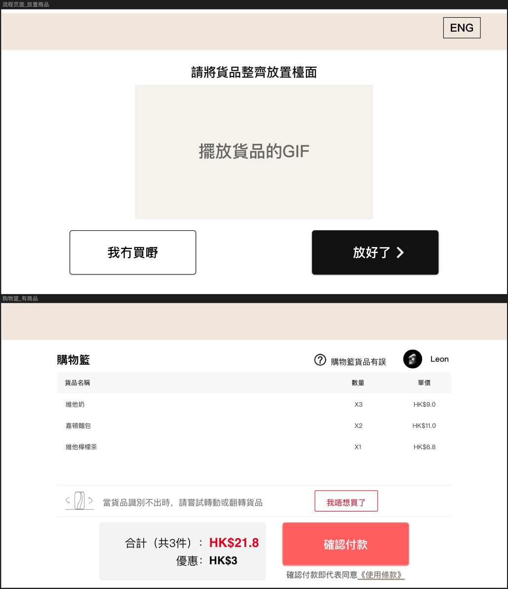 -
店铺管理系统
主要负责店铺管理、用户管理和订单管理开发
使用 Meteor 应用开发、React框架、MongoDB、RESTful API、pm2 和 MQTT
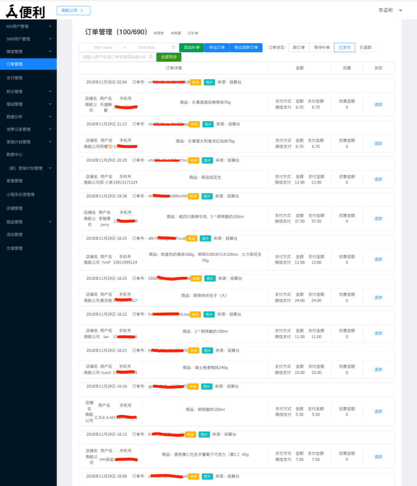 -
设备管理系统
主要负责设备管理系统前后端开发
使用 Meteor 应用开发、React框架、MongoDB、RESTful API、pm2 和 MQTT
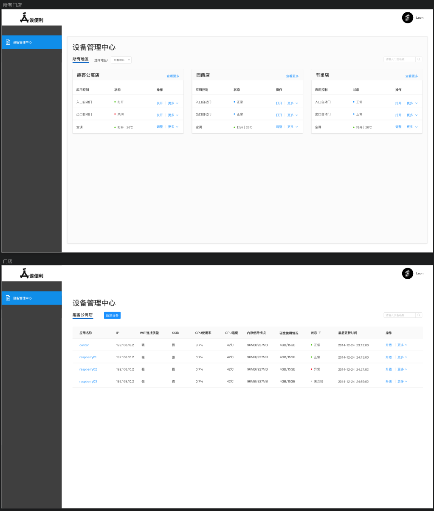
深圳前海罗德投资管理有限公司（2015年10月 ~ 2017年07月）
-
深圳无境创新科技有限公司 和 深圳前海罗德投资管理有限公司 是相同的技术团队，由于技术转型，所以公司名称修改了
-
路享 Roadshr
公司规模：20+ | 天使轮
主要负责 TMS（运输管理系统）、路享运输微信公众号开发的前后端开发
使用 Meteor 应用开发、Blaze框架、MongoDB 和 DDP 数据交互
项目与金正大生态工程集团股份有限公司合作，落地了以化肥招投标为核心的管理系统，完成了2000多单招标
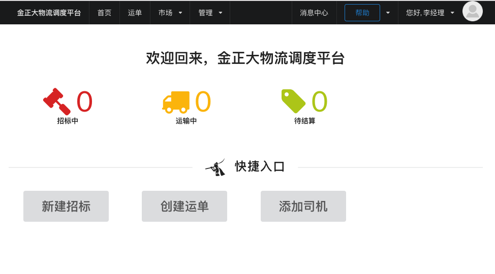 -
运路擎
主要负责 OMS（订单管理系统）、路擎微信公众号开发的前后端开发
使用 Meteor 应用开发、React框架、MongoDB、RESTful API 和 DDP 数据交互
完成关注公众号即可查询、办理车辆外迁，其中系统上，用户数：1262单，运输订单数：297单，外迁订单数：857单，其他业务：501单（开发票，停放业务）
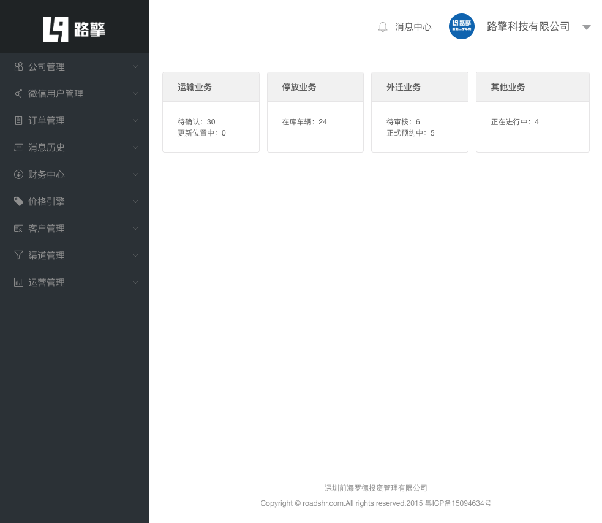
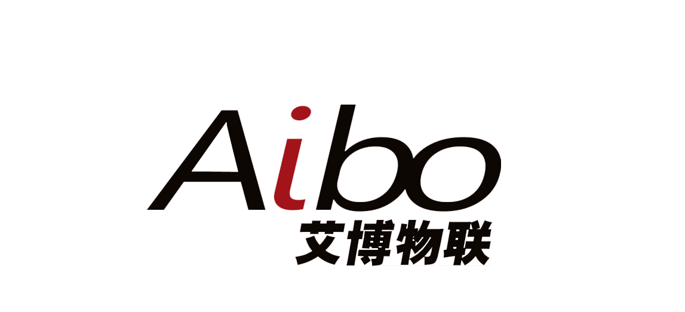珠海经济特区艾博物联有限有限公司（2014年04月 ~ 2015年05月）
-
万店通
主要负责网站的前端开发，部分后端开发和服务器维护
使用 ThinkPHP3.2 框架和 MySQL 数据库
万店通是一个以优惠卷为载体带动线下消费的电子商务网站。
落地运行10余家门店
彩京有限科技公司（2012年07月 ~ 2014年01月）
-
Dealer（荷官）报表项目
主要负责Dealer（荷官）报表项目的开发维护工作
报表项目主要使用C# .NET桌面应用的水晶报表统计Dealer（荷官）的绩效与统计